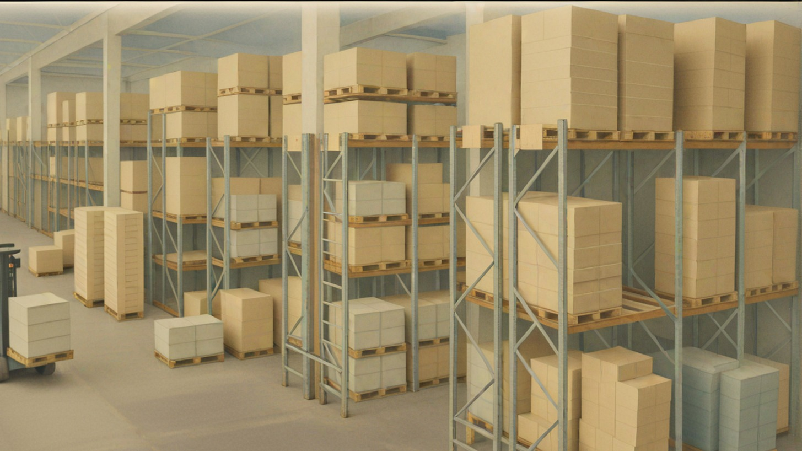

SITAL S.R.L. è un’azienda con sede a Villanova Monferrato e parte di un gruppo internazionale con base in Lussemburgo. Da oltre 30 anni siamo un punto di riferimento per la gestione di eccedenze e invenduti dell’industria alimentare e non alimentare italiana.
Acquistiamo prodotti alimentari e di largo consumo direttamente dall’industria italiana, e li ridistribuiamo verso mercati alternativi e realtà del terzo settore, senza interferire con le reti di vendita tradizionali dei nostri fornitori.
Negli anni ci siamo specializzati anche nei prodotti freschi e nel settore non-food, come detergenti e articoli per l’igiene personale.
Il nostro impegno è ridurre gli sprechi e promuovere la circolarità delle risorse. Collaboriamo con numerose associazioni no profit e organizzazioni caritative, offrendo loro prodotti a costi ridotti per completare la propria offerta solidale.
I nostri capannoni sono coperti da pannelli fotovoltaici e utilizziamo energia verde per alimentare le nostre attività logistiche.

Email: sitaltrading@asleygroup.com
Telefono: +39 0161 80 11 43
Indirizzo: STRADA STATALE 31 CASALE-VERCELLI 7 - 15030 - VILLANOVA MONFERRATO (AL)